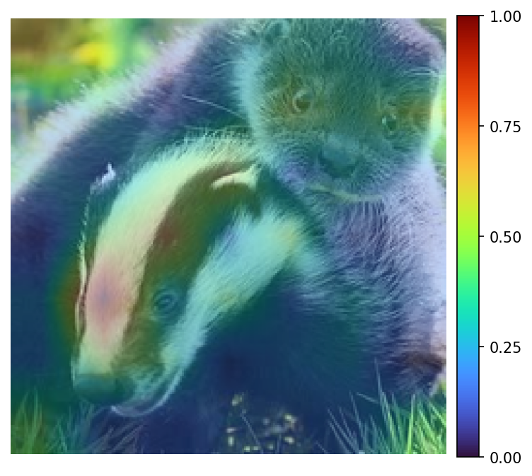

The JLens, as introduced by Anthropic, can be viewed as a principled continuation of the logit lens together with an underlying framework for interpreting what these JLens vectors uncover. I have adapted the JLens vectors from the LLM setting into ViTs, in order to better understand attributions generated for classifications. An attribution is a heatmap, generated after an image classification, which shows which parts of the image were more or less relevant to the final classification. There have already been approaches to use JLens for ViTs (lesswrong post), but here we try to use its semantic readout to understand not only which parts of an image were important, but also to form a more informed hypothesis about why they were important.
By applying the JLens vectors to ViTs and their attributions, we found some interesting insights:
- once fitted, this seems like a cheap method of introspection, requiring only a matrix multiplication for each new activation
- evidence that patch tokens contain both locally structured and globally mixed information
- informational enrichment for conventional attributions
Attributions in Vision Transformers
Explainability has been a topic of great significance for many years already. Especially attributions in vision models are one type of explainability (or what we would call interpretability nowadays) that have been around for quite some time. When a vision model takes in an image and outputs a classification, as is the case with Vision Transformers, we would like to understand what part of the image plays a more (or less) significant role to the final decision in the classification process. Attributions are generating heatmaps, made up from attribution values, highlighting regions with more impact with a more red color (higher attribution value) compared to regions with lower impact (blue color).
[Example image of an attribtuion with some underlying text, probably use one from the paper]

Introduced by Chefer et al., TransMM is one of the methods producing these attribution images building upon a fairly simple concept which is what makes it so powerful in my opinion. Compute the gradients of the attention maps and multiply them with their activations. To get a single token by token map, average across all the heads per layer. Additively propagate the scaled attention maps. At the end, you extract the first row which has one value per token for the final classification token. This is going to be your attribution map. [1]
[2 formulas, first is the gradient times activations averaged, then the propagation.]
$$ \bar{\mathbf{A}}^{(\ell)} = \mathbb{E}_{h}\!\left[ \left( \frac{\partial y}{\partial \mathbf{A}_{h}^{(\ell)}} \odot \mathbf{A}_{h}^{(\ell)} \right)_{+} \right] \tag{1} $$ $$ \mathbf{R}^{(0)} = \mathbf{I}, \qquad \mathbf{R}^{(\ell)} = \mathbf{R}^{(\ell-1)} + \bar{\mathbf{A}}^{(\ell)} \mathbf{R}^{(\ell-1)} \tag{2} $$This works fairly well, measured under different faithfulness metrics such as SaCo, Faithfulness Correlation, and Pixel Flipping, but it leaves one of the most important questions on the table. Not only what part of the image was important, but WHY was it important? We can only make educated guesses with these methods. In my own research, I have tried to answer the question behind why through the integration of a Sparse Autoencoder (SAE). I designed a method that combines the SAE features into the attribution generation process, and found that it consistently improved SaCo and Faithfulness Correlation, while producing smaller and more mixed improvements on Pixel Flipping [2]. But there are a few limitations with this method, first is having to train a Sparse Autoencoder which takes time and compute. Another one is that the features generated by the SAE are learned in an unsupervised manner; this leaves us second guessing their semantic meaning again when features have no clear characteristics.
[Example of a feature where it is hard to find common ground]

Jlens and how it connects to vision
A spiritual continuation of the logit lens approach, the Jacobian lens (J-lens) is a method developed by Anthropic and was used in their technical report to find evidence of a global workspace [3]. In their language-model experiments, it seems to hint at a special phenomenon where intermediate representations can not only be decoded into verbalizable concepts, but a small privileged component of these representations is also causally involved in downstream computation. We use their lens construction, but do not assume that vision models contain the same privileged sparse J-space. To understand what exactly is happening here, we need two pieces:
[formula for the jlens vector]
$$ \mathbf{J}_{\ell} = \mathbb{E}_{\,t,\,t' \geq t,\,x} \left[ \frac{\partial \mathbf{h}_{L,t'}(x)} {\partial \mathbf{h}_{\ell,t}(x)} \right] \tag{3} $$ $$ \mathbf{v}_{\ell,w} = \mathbf{J}_{\ell}^{\top}\mathbf{w}_{U,w}, \qquad \mathbf{v}_{\ell,w}^{\top} = \left(\mathbf{W}_{U}\mathbf{J}_{\ell}\right)_{w,:} \tag{4} $$[formula for the jlens score]
$$ s_{\ell,w}\!\left(\mathbf{h}_{\ell,t}\right) = \left\langle \mathbf{v}_{\ell,w}, \mathbf{h}_{\ell,t} \right\rangle \tag{5} $$ $$ s_{\ell,w}^{\mathrm{cos}}\!\left(\mathbf{h}_{\ell,t}\right) = \frac{ \left\langle \mathbf{v}_{\ell,w}, \mathbf{h}_{\ell,t} \right\rangle }{ \left\lVert\mathbf{v}_{\ell,w}\right\rVert_2 \left\lVert\mathbf{h}_{\ell,t}\right\rVert_2 } \tag{6} $$ $$ \operatorname{lens}_{\ell}\!\left(\mathbf{h}_{\ell,t}\right) = \operatorname{softmax} \left( \mathbf{W}_{U}\, \operatorname{norm} \left( \mathbf{J}_{\ell}\mathbf{h}_{\ell,t} \right) \right) \tag{7} $$This gives us a score for each internal activation that is able to describe its alignment with verbalizable concepts. Anthropic found a sparse, privileged J-space component within the activation space, while substantial representation remains outside that component. Their interventions show that selected JLens coordinates can be causally involved in downstream computation. The paper is well worth a read, but we will mostly concentrate on the JLens vector and score for the rest of the post. In our own experiment, we use the signed projection in Equation 5; Equation 6 is an optional alternative, while Equation 7 describes Anthropic's full normalized lens readout.
One thing the JLens vector and the JLens score can tell us is internal alignment with verbalizable concepts, similar to logit lens. The logit lens applies the model's final decoder directly to an intermediate activation. JLens instead uses an average Jacobian to transport the final output directions back into the intermediate representation space. Assuming that the internal representation between layers might be different, this seems more principled (the Anthropic report talks more about that). The question then naturally became, does this work to get a more consistent explanation of the "why" behind some patches being more important to the final classification. And how does it compare to other methods?
Method
So we are using the JLens vector to calculate a score for each token inside an intermediate layer and apply those to explain attribution maps. We use an OpenCLIP ViT-B/32 model, checkpoint CLIP-ViT-B-32-DataComp.XL-s13B-b90K, which was contrastively pretrained on DataComp image–text pairs and is evaluated zero-shot on ImageNet-1k. At a 224×224 input resolution, its 32×32 patches produce a 7×7 grid of 49 spatial tokens. We apply the JLens vector at layer 9. This comes from the experiments here [2], where we identified layer 9 of that model to be specifically strong for Sparse Autoencoders. This seemed like a good starting point for this evaluation.
Calculating the JLens Vectors
In CLIP, there are a few different architectural properties than in a decoder-only LLM, for which the method was designed. Unlike an autoregressive LLM, a ViT has no ordered set of future token positions. We therefore differentiate the final normalized image embedding, derived from CLS, with respect to every layer-9 spatial token and average these Jacobians across images and patch positions. All spatial tokens interact bidirectionally, and the final image embedding is the single endpoint used by the classifier.
The next step is adapting the idea of the unembedding matrix. CLIP does not have a fixed 1,000-class unembedding matrix in the same sense as an LLM. We construct a bank of 1,000 normalized ImageNet class directions using CLIP's text encoder. For class \(c\), its normalized text direction \(\mathbf{t}_c\) plays the role of the output direction, and the class logit is \(z_c(x)=\tau\mathbf{t}_c^\top\mathbf{e}(x)\).
$$ \mathbf{J}_{\ell}^{\mathrm{ViT}} = \mathbb{E}_{x,p} \left[ \frac{\partial \mathbf{e}(x)} {\partial \mathbf{h}_{\ell,p}(x)} \right] \tag{8} $$ $$ \mathbf{v}_{\ell,c} = \tau \left(\mathbf{J}_{\ell}^{\mathrm{ViT}}\right)^{\top} \mathbf{t}_{c} = \mathbb{E}_{x,p} \left[ \frac{\partial z_c(x)} {\partial \mathbf{h}_{\ell,p}(x)} \right] \tag{9} $$ $$ s_{\ell,p,c}(x) = \left\langle \mathbf{h}_{\ell,p}(x), \mathbf{v}_{\ell,c} \right\rangle \tag{10} $$[Codex addition: The results reported below use exactly this uncentered score. Subtracting the fit-set mean activation, \(\langle\mathbf{h}_{\ell,p}-\boldsymbol\mu_\ell,\mathbf{v}_{\ell,c}\rangle\), leaves the within-image spatial correlation unchanged but changes cross-class calibration. In our comparison it reduced recurring class priors and slightly improved target-class ranks. The centered and uncentered results should therefore be reported as separate protocols rather than mixed.]
We fitted \(\mathbf{J}_9^{\mathrm{ViT}}\) on 9,993 ImageNet training images. The evaluation below used 10,000 class-balanced ImageNet validation images that were disjoint from the fit set. The frozen model's accuracy on this evaluation sample was 64.67%, but all semantic-alignment measurements use the model's own prediction as the target rather than the ground-truth class. This lets the experiment ask whether JLens explains the model's decision even when that decision is wrong.
Results
What we found is that JLens seems to be well-aligned with attribution, and therefore poses a promising way of interpreting attribution patterns. For the top 5 patches with the highest attribution value, the prediction made by the model was in the top 10 of the JLens readout 53.24% of the time, compared with 25.35% for random patches and 13.36% for the least attributed patches. Under a fixed random reassignment of class labels, the top-patch rate was only 0.87%. When aggregating the five patch readouts before ranking the classes, the corresponding rates were 81.41% for the highest-attribution group, 45.60% for random patches, and 18.93% for the lowest-attribution group.
Across all 49 patches and 10,000 validation images, the mean within-image Spearman correlation between vanilla TransLRP attribution and the predicted-class JLens score was 0.3123, with a 95% confidence interval of 0.3074–0.3172 and a median of 0.3409. The correlation was positive in 88.23% of images. Thus the relationship is moderate rather than a reconstruction of the attribution map, but it is highly consistent across images.
At layer 9, there is also evidence that both local and global information plays a role. Adjacent patches had 16.3% exact top-concept agreement and mean readout-vector cosine 0.305. Far-apart patches had 4.9% agreement and cosine 0.171, while patches drawn from different images had only 0.75% agreement and cosine 0.104. The decline with distance suggests that the readout retains local spatial structure. At the same time, the least-attributed patches still placed the predicted class in their top 10 substantially more often than the roughly 1% shuffled-label baseline, consistent with image-wide information being mixed into late patch representations. These measurements cannot determine whether a concept was computed locally or imported from elsewhere through attention.
The biggest advantage JLens vectors have is that they are aligned with a predefined, human-readable, output-aligned vocabulary grounded in CLIP's native text embedding space. The two lenses related very differently to attribution: the predicted-class JLens score had a mean spatial correlation of +0.3123 with attribution, whereas the direct patch logit-lens score had a correlation of -0.3951. Only 7.71% of images had a positive logit-lens correlation. This does not show that logit lens is generally ineffective: the final CLIP decoder is trained on the final CLS representation, so applying it directly to an intermediate patch token is an off-distribution forced decoding. JLens is better matched to this particular attribution question because its class directions are transported into the layer-9 patch space. In a separate 1,000-image audit, the complete 1,000-class score vectors of JLens and the final patch logit lens had mean correlation of approximately -0.405 at highly attributed locations.
[Codex addition: The strongest causal result from the earlier, more extensive worktree should be kept conceptually separate because it used a centered target-versus-runner JLens rather than the uncentered 1,000-class readout above. On 2,000 fresh images and 98,000 single-patch interventions, the target-versus-runner JLens had mean Spearman correlation 0.1659 with causal margin effects, compared with 0.1128 for gated TransLRP, 0.0843 for vanilla TransLRP, 0.0035 for a coordinate-shuffled JLens map, and -0.0019 for a wrong-class map. After controlling for both attribution maps and the semantic controls, the real JLens term remained positive in 1,580 of 2,000 images. This is evidence that JLens can add class-specific explanatory information beyond merely restating an attribution map, but it is a distinct experiment and should receive its own methodological description if included in the final post.]
Limitations
The semantic readout is currently limited to the 1000 ImageNet classes, and leaves only a fairly granular read on the intermediate token representations. For instance, “green mamba” frequently appears as the nearest available label for green regions, although this partly reflects the restricted ImageNet vocabulary and the calibration of the uncentered readout. It should therefore be treated as a ranked semantic hypothesis, not a literal inventory of what is inside the corresponding image square. CLIP is capable of supporting more semantic readouts but this would necessitate building a representative dictionary; this was left for the future.
Another limitation is that using JLens directly as an attribution method did not consistently improve results across metrics. Some configurations improved Pixel Flipping while regressing on Faithfulness Correlation and SaCo, and rank fusion also improved some patch-ordering results. Its clearest current role is consequently as a semantic explanation and auditing layer over an attribution map, not as a replacement attribution method. Since this method is not very well researched in vision models yet, I am confident that possible advances could be made in the future.
Finally, the present experiment establishes systematic alignment and supplies useful semantic hypotheses, but it does not prove that every displayed JLens concept caused its patch to receive a high attribution. Attribution identifies the image-specific locations judged important by TransLRP, while JLens identifies the output concepts represented there under an average downstream transport. Their combination supports a model-grounded interpretation of why a region may matter, while an intervention is required for a causal claim about a particular concept or patch.
References
- Hila Chefer, Shir Gur, and Lior Wolf. “Generic Attention-Model Explainability for Interpreting Bi-Modal and Encoder-Decoder Transformers.” Proceedings of the IEEE/CVF International Conference on Computer Vision (ICCV), 2021, pp. 397–406. Open-access paper. DOI: 10.1109/ICCV48922.2021.00045.
- Julius Šula, Thomas Lukasiewicz, and Bayar Menzat. “Faithful Attribution in Vision Transformers via Feature-Gradient Gating.” Proceedings of the IEEE/CVF Conference on Computer Vision and Pattern Recognition Workshops (CVPRW), 2026, pp. 4178–4182. Open-access paper.
- Wes Gurnee et al. “Verbalizable Representations Form a Global Workspace in Language Models.” Transformer Circuits Thread, Anthropic, 6 July 2026. Technical report.